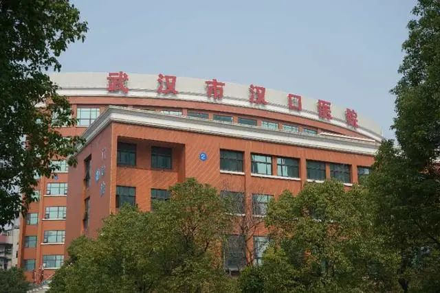

中山医院赴武汉医疗队领队：不希望我的队员说太多豪言壮语
原文链接 备份链接 摘要：截至2月17日，全国已有3.2万余名医护人员支援湖北，支持湖北实现“应收尽收、应治尽治”。2月7日，其中一支医疗队的领队、复旦大学附属中山医院副院长朱畴文率领的136人队伍奉调入鄂，一天后接管了武汉大学人民医院东 …
中青报·中青网见习记者 李强/摄
中青报·中青网见习记者 李 强
编辑 从玉华
脚下的地，是黏的。那是泼洒在地面上的药水得不到及时清洗造成的。
57岁的郭亚兵很少在医院碰到这样的情形，即使是17年前在北京小汤山医院抗击“非典”时。但当1月26日他带领广东省9家医院组成的126人的临时医疗队，接管武汉市汉口医院一个“重灾区”时，他感觉自己像被“泼了一瓢冷水”。
在武汉市汉口医院3号楼2层呼吸科第六病区，病房里挤着80个危重症新冠肺炎患者，只有两个护士和两个眼科医生守着；十几个病人同时按响床头铃呼叫护士，总有病人无人搭理；医疗垃圾堆在病区最里面的一间屋子里，满满一屋子没人收；地，黏乎乎的，没人拖；缓冲区空间昏暗狭小，每次仅容两人穿脱防护服。实际上这只是这所有400张病床的临时传染病医院的一部分。
“天呀，怎么这么多重病人。” 医疗队42岁的护士长李利也被吓坏了。
每开一个病区，一天就收满了
援兵到来之前，武汉市汉口医院医务部主任吕清泉，已经连续工作了23天。从1月3日，汉口医院收到第一个有华南海鲜市场接触史的疑似病例开始，他的工作就再没停歇。大多数的夜晚，他都是在办公室里的行军床上度过的。
“当时认为可能没有传染性，但我们还是非常警惕。”吕清泉告诉记者，1月5日，汉口医院将位于一栋独立小楼二楼的呼吸科和内分泌科腾空，作为最早收治病人的病区。这也是后来广东医疗队接管的病区。
发热门诊就诊人数越来越多，影像学检查显示“病毒性肺炎”越来越多。1月13日晚上9点，医院又将住着近70位病人的心内科病房腾空，科室与病人临时调整到外科大楼。
“我们每开一个病区，一天就收满了。”吕清泉说，“1月19日发现情况不对，病人太多了，医务人员不够。我们就把内分泌科关掉了。”
1月20日，国家卫健委高级别专家组介绍，这种肺炎存在“人传人”的现象。当天，广东省卫健委通报了广东省首例输入性新冠肺炎的确诊病例。1月21日，武汉市汉口医院成为武汉市最早接收新冠肺炎患者的3家定点医院之一。郭亚兵所在的广东南方医科大学南方医院，也在同一天成为新冠肺炎定点医院。
南方医院呼吸科主治医师肖冠华已经预感到自己可能要去支援，他跟妻子散步时，问她，“武汉那边可能会需要人，我想去，你支不支持？” 妻子丢了一句话：“你要是不去，就不是你了。”
汉口医院从1月21日起，把将近200个非肺炎病人清空，一夜之间开了10个发热门诊。”吕清泉说，“当天晚上，接了400个发热病人。第二天1200人，第3天1500人。”
大量病人涌向医院，担心感染的护工离开了，行政人员临时充当清洁工和搬运工。
吕清泉最担心的问题也出现了：陆续有同事“中招”——感染新冠肺炎。
“每倒一个人，意味着空位置需要有人来填。”但吕清泉找不到人，“刚开始50岁以上的医生没让上一线的。后来50多岁，快退休的医生全部都进来。”
有时候他自己也必须挤进人满为患的发热门诊，处理纠纷。腊月廿九，他被一个70多岁老人揪着脖子要求看高血压，还有普通发烧的病人，由于恐慌要求住院。
“有的医生头天晚上还在值夜班抢救病人，第二天就住院。”吕清泉记得，他们经历了两次医务人员感染高峰，第一次是1月20日之前，第二次是1月21日至1月29日之间。
第一批“中招”的医护人员，主要集中在呼吸科与重症医学科。“因为新的诊疗指南出来之前，我们可能无意识地增加了医务人员暴露风险。后来，第二拨人又特别疲劳休息不够，身体抵抗力下降。”吕清泉说，“我24小时手机不关机，最长纪录是5天4夜没睡。”
1月23日，连续工作21天的吕清泉被院领导要求强制休息半天，“手机关机，天塌下来，你不管它。”但吕清泉没关掉手机，他给“中招”的医生打电话，电话那头的医生说：“我一旦好了，要立刻返回岗位。”吕清泉听得直流泪。
那时候，支援武汉的广东省医疗队已经开始“备战”。
除夕夜，有人只在年夜饭的餐桌上吃了两块三文鱼；有人到了武汉之后才跟母亲打电话说自己来了一线，母亲哭了；有人找了个借口说“有一台手术要做”，便匆匆回到单位，至今还瞒着父母；有人把银行卡、支付宝密码记在本子上，留给家人。有人捧着东拼西凑做成的两束花前来送行，告别时有人哭了。
大年初一凌晨，医疗队126名医护人员抵达武汉时，天正下着小雨，室外温度零下5℃，很多人没提前备好羽绒服，有的带着西服就来了。
当天晚上，郭亚兵前去汉口医院，准备接手的是一个拥有39个床位的病区。但第二天上午交接时，“变了——80张病床！”
 2月25日，武汉市汉口医院负责物品搬运的人。中青报·中青网见习记者 李强/摄
2月25日，武汉市汉口医院负责物品搬运的人。中青报·中青网见习记者 李强/摄
我们这些人来对了
其实，广东省医疗队已经是第三批支援汉口医院的医疗队。吕清泉告诉记者，1月21日，武汉市中心医院曾派医疗队支援过，但1月29日便离开了。1月24日，海军军医大学医疗队也赶赴汉口医院，但2月2日转战火神山医院。
汉口医院已经守了很久，损失惨重。“他们的院领导好几个都倒下了。” 郭亚兵向记者回忆，“他们看到援军来了，眼泪都下来了。”
最后，郭亚兵接手时数了数，“可能也就六七个医生，不到20个护士。他们真的管不过来。”
“每个病房都住得满满当当。”护士长李利说，“当时护士很疲劳，危重病人多，整个病区脏乱差。”
“我们这些人来对了。” 李利说。
工作开始调整，“这种时候不是进去的人越多越好，减少感染率，要最少的人进去才合适。” 医疗队实行弹性排班，轮休保证医护人员每周有3天休息时间，并将80个病床进行ABC分区管理。
这个医院，虽然迎来了广州三甲医院的“精英”，但匮乏的医疗资源，让大家很头疼。
11位检验科的医生，由于医院达不到进行核酸检测的标准，他们只能临时充当起“清洁工”“司机”“搬运工”；重症医学科的医生只能在由普通病房临时改造的病房里抢救病人；那些在三甲医院顺手就能够找到的医疗器材，这里很难找到；郭亚兵至今没在医院里见到ECMO（体外生命支持）。
重症医学科医生吴凤遇到一例呼吸困难患者，需要做胸腔积液穿刺引流术，但找不到配套的引流管，最后找了一根尿管，通过改造接口也达到很好的引流效果。
郭亚兵做的第一步就是改造病区。提到当年在小汤山医院，他最多的记忆也是与“感染控制”有关。
“汉口医院平时不是按照传染病医院来管理，病人乱串，病人家属乱串，完全是开放的病房。”郭亚兵注意到，在仅有两道门与隔离区分开的办公室里，竟然有医生在这里吃饭，且不戴口罩。缓冲区只是闸了3道木门，但门头上有空隙没被封死，且缓冲区没有装灯，每次只能够容下两个人穿脱防护服。
“吃饭的办公室赶紧清掉，缓冲区重新做，门口打胶全封死。”在改造缓冲区的时候，郭亚兵遇到一个修门的师傅，在将前两扇门改造好之后，最接近污染区的那扇门死活不愿干，连锁也不愿意装好，“他说你给我1万块钱一天我也不干。”
在广东医疗队接管的混乱的第一天，这个病区就送走了5位病人。郭亚兵记得，“有一个从急诊科直接推到我们这个地方，实际上已经不行了。” “很无助！你看着病人倒下，没多少办法。”郭亚兵感觉到无可奈何。
第一天下来，有的护士吓哭了，有的ICU医生夜里做了噩梦，有的吃下安眠药入睡。
“来的时候雄心壮志、豪情万丈，咚地一下掉到冰窟窿里去。”郭亚兵说，起初大家有些悲观。曾跟随郭亚兵支援过小汤山医院的护士长李利也觉得，“它传染性太强了，而且潜伏期太长，这是比‘非典’更可怕的地方。”
郭亚兵的印象里，17年前在小汤山医院，“所有的后勤供给给你安排得好好的，你管好自己不感染，干好活儿。现在好多事情都要自己干。”
在如今的病区里，护士成了护工、清洁工、送餐员，要负责污染区的垃圾清理、拖地开窗、端水送饭喂元宵、擦屎倒尿换窗帘，甚至搬运四五十公斤重的氧气瓶。
一位1996年出生的小护士，人生中第一次搬氧气瓶。入行6年的护士张志博每天拉着小车要送20个氧气瓶，整个病区每天至少需要搬六七十瓶。汉口医院也有中心供氧的管道，但由于耗氧量达到往常的10倍，管道氧压不足。
 武汉市汉口医院急诊科门口摆放的空氧气瓶。中青报·中青网见习记者 李强/摄
武汉市汉口医院急诊科门口摆放的空氧气瓶。中青报·中青网见习记者 李强/摄
接管病区的第二天，郭亚兵就开始寻找氧气。郭亚兵去急诊留观室拉氧气瓶的时候，却感受到另一种“可怕”的场景。
“留观室真是躺得满地都是，很悲壮。”郭亚兵第一天到达汉口医院时并未来过这里，他透过一扇玻璃门看到急诊留观室里：有的坐在凳子上，有的躺到简易床上，有的在地上，全都是病人，也收不进去，最多只能打吊针。室外，条件好的把吊针挂在私家车里，条件差的就在三轮车上杵个棍。
那天晚上，郭亚兵拉了十几瓶氧气，仅解了一时之渴。
接下来的几天，凡是领导下来慰问，医疗队便提出希望解决氧气瓶的问题；弄来三五十台家用制氧机，减少管道氧气的用量；改善储氧面罩，提高用氧效率。
“语言，药物，氧气，是这里治疗的三大法宝。”吴凤在一次值夜班时，遇到过一个老人，陪护家属无法安抚病人情绪。但只要医生护士在旁边不停地跟他讲话，老人的血氧饱和度就可以达到85%，但只要稍微走一会儿，“回来一看又只有74%”。吴凤说那天晚上的大部分时间，她都站在老人的病床前说，反复说，“没事的，你放心好了。”但白班时医生都很忙，没人能够像晚上一样陪他说话。次日傍晚，老人走了。
她最后连她想喝的水都没喝到
其实汉口医院并非没有ICU病房，这里有一个拥有16张床位的外科ICU病房，但被专家们判了“死刑”，至今空置未用。“呼吸机上不上去，氧压还是不够。更严重的问题是，病房通风不行，会造成很大的威胁。之前他们ICU的医生，插管插了3个病人，结果7个医生6个‘中招’。”
如今一个月过去了，医疗队并未有人感染。
“至少它是同一个呼吸道的疾病，它预防的方式一样。”郭亚兵说，“非典”时他们做到了“零感染”，虽然这次病毒不同于“非典”，比“非典”传染性更强，更狡猾，但他第一个目标还是零感染，带着大家平平安安来，平平安安回。
从大年初一，医疗队到武汉的那天，高强度的“防护培训”就开始了。医疗队花了半天时间训练穿脱防护服，并要求他们两两互相监督。这是郭亚兵“非典”时汲取的经验：防护要做严格，但心态要放轻松，“该吃吃该玩玩该睡睡”。
真正走进病房，护士张志博总感觉“防护服是不是在漏风？”在郭亚兵看来，“怕，我们就放心了。就怕你不怕，慢慢油条了，胆子大了，那种往往容易中招。”
“走路跟企鹅似的，衣服全是汗，护目镜上全是雾，眼睛看不清，听力也会受到影响，所以第一天基本就是靠吼。”张志博告诉记者，戴着3层手套让手指失去了灵活度，第一天扎针的成功率只有60%左右，“还是有些受打击的”。
工作不几日，几个医生选择了剃成光头，而给他们剃头的同行护士，在此之前只给她家的萨摩耶犬理过毛。
郭亚兵头发早已花白，在这支队伍里，他是年龄最大的。像采集咽拭子这类暴露风险高的任务，他总揽在手上，“你们年轻，我来，我有经验”。有一天他取了20个咽拭子。
疫情一天天地好转，发热门诊的门诊量也降了下来，病区的情况趋于稳定。病房的垃圾被清理干净了，病区氧气瓶的供应，也从最初的四处搜寻，到每天在固定的位置搬用。
前两天医疗队的群里，有人说“这个星期好像没怎么走人了。”李利记得，起初医疗队到的时候，这个病区平均每天要送走两位病人，“这样的情况维持了一周左右，后来就一周去世一个。”
吴凤也有同样的感受，院方已经不再催着病区接收新病人，一些新住进医院的病人，症状也相对较轻。她见过氧疗3周、从大白肺到肺部纤维化完全吸收的68岁的病人，也见过48岁的退役老兵，在无法住进医院之前在家中靠制氧机自救，住进医院后肺部开始慢慢恢复。
吕清泉在连续工作超过50天以后，此前“中招”倒下的同事逐渐出院，呼吸科的医生开始回来了，向他申请上一线。
武汉的天气渐渐暖起来，病房也是。比如有人走路去医院时，在酒店门口遇到陌生人，说“我送你们去医院吧”；比如在病区，陪床家属会在空闲时，帮忙搬运氧气瓶，清理垃圾；比如突然听到一个身体慢慢恢复的病人叫出自己的名字；比如出院的小姑娘会留下一幅画着樱花和热干面的画；再比如当一个陪床家属在护士下班时问，“你明天还上班吗？”眼神里满是期待。
护士张志博最近送走了一位50多岁的病人。
那是个危重患者，上着无创呼吸机和心电监护。张志博看到她的时候，她的血氧饱和度不到70%，心率为107次。交接班时，同事告诉他，前一天晚上刚通过胸外按压的方式把她抢救回来。交接班后，张志博便去给其他病人输液，一会儿有同事喊他，“你的床（病人）要喝水”。
病区里只有开水，张志博拿着杯子接了一杯开水，端在手里用勺子搅着。透过护目镜，他看到水还冒着热气，条件反射般地想用嘴吹一下。勺子又在空气中晾了一会儿。
张志博把扣在她嘴上的呼吸面罩取了下来，水送到了她嘴边。
“她喝了一下，说‘哦好烫，好烫’。”张志博赶忙把她的面罩扣回去，继续让水在杯子里晾着。晾了一会儿再喂时，她仍然觉得烫。
“晾一下我再喝。”这个病人说。张志博把呼吸面罩又扣了回去，看了看血氧饱和度，80%，“比我接班时好很多”。放下杯子，张志博去写护理记录单。
过了一会儿，同事告诉他：“她现在（心率）只有50几次。”张志博感觉情况不对劲，立马往病人床前走，并让同事帮忙叫管床医生。“我过去看她，心率已明显慢下来了。56次。然后我们就开始抢救。” 最终她还是走了。
她走后，张志博摸了摸那个40分钟之前还盛着热水的杯子，水已经凉了。
“她最后连她想喝的水都没喝到。”张志博有点儿自责，“哎，这杯水我应该给她准备成温水。”
 中青报·中青网见习记者 李强/摄
中青报·中青网见习记者 李强/摄
在污染区里，原则上不允许有人陪床，但医院一直都有部分病人存在家属陪床的情况。女儿“陪床”80多岁的父亲，死活不肯离开；一个意识障碍的男人确诊后，老伴儿宁可感染了，也不愿离开。
“有很多现实的问题。”呼吸内科副主任医师胡国栋告诉记者，“很多危重的患者，除了我们医疗积极的救治以外，有一个很好的家属去陪伴也是很好的。”但医生们都明白，陪床者很可能是流动的传染源，胡国栋说问题的根源还是医护人员人手不足。
大多数病人并没有家属陪床。护士长李利说，“很多病人都是一家人得病，都在医院。”
郭亚兵但求能够把队伍平安带回，肖冠华希望疫情早点儿结束，他想看看每天自己叫着名字却看不到面容的同事，到底长什么样子，张志博想回家看父母。
东道主吕清泉也盼望能摘下口罩，看看这一群救兵。他盼望着疫情在3月初结束，他要带他们去武大看樱花，“3月初正是武汉最美的时候。”
护士的陪护任务很重。一天晚上，李利跟女儿打电话时，女儿说自己的作业写完了，要等妈妈回来的时候再对答案，李利哭了。
李利很少有摘掉口罩的时候，除了一个人在房间，或者阳光好的时候，爬上酒店空旷的天台，就像17年前在小汤山医院一块空旷的草地上。
医疗队住的酒店离长江只有3000米，他们却没去过。那个被高楼大厦环绕的天台成为许多医护人员放风的地方，有人散步，有人听歌，有人闲聊，有人晾晒衣裳，有人在此第一次见到雪花从天空飘落。
中国青年报·中青在线出品
微信编辑 | 陈轶男

觉得好看请点这里
原文链接 备份链接 摘要：截至2月17日，全国已有3.2万余名医护人员支援湖北，支持湖北实现“应收尽收、应治尽治”。2月7日，其中一支医疗队的领队、复旦大学附属中山医院副院长朱畴文率领的136人队伍奉调入鄂，一天后接管了武汉大学人民医院东 …
原文链接 备份链接 *************▲*************广东医疗队医生在会诊病情。（采访对象供图/图） 全文共*5409*字，阅读大约需要13分钟。 在生与死构筑的无奈当中，也有些闪着人性之光的事情。医护人员发现，在 …
原文链接 备份链接 凤凰新闻客户端 凤凰网在人间工作室出品 我是北京日报摄影记者和冠欣，1月27日，我跟随援鄂北京医疗队来到了武汉，走上了抗击新冠肺炎的战场。昨天，2月25日，是我到武汉的第30天。 援鄂北京医疗队来到武汉后，在武汉协和 …
原文链接 备份链接 每天一条独家原创视频 大年初一，首批驰援湖北的医疗队之一 湖南株洲市中心医院的15人医疗队抵达黄冈。 发现状况令人崩溃： 黄冈当地医护人员天天连轴转， 已经支撑不下去， 防控不到位，医护人员陆续被感染， 床位紧张，住 …
原文链接 备份链接 澎湃新闻记者 李佳蔚 郁斐 制图 进驻武汉第一天，上海医疗队就知道，要治愈的不仅是患者身体，治愈出院也不会是服务终点。 时至今日，事实证明他们做得不赖。 2月7日，上海中山医院第四批医疗队进驻武汉大学人民医院东院，整建 …